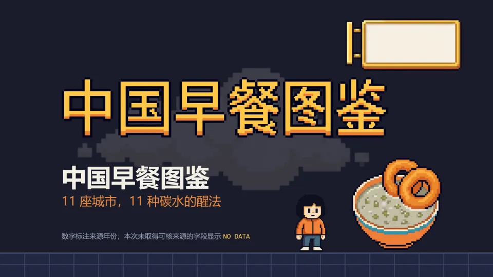

INPUT
材料与意图
主题、PDF、DOCX、网页、图片、已有 PPTX、品牌资产，或一份明确的模板简报。
PPT Master 把主题、材料、已有 PPT 或视觉参考，先路由到一个唯一的运行时，再按 Plan → Do · Check · Act 的节奏生成、校验、修复并导出可继续编辑的 PowerPoint。

PPT Master 的入口不是一张万能 prompt，而是一个“只选一条路”的决策器。选错路，后面的一切都会偏。
主题、PDF、DOCX、网页、图片、已有 PPTX、品牌资产，或一份明确的模板简报。
Generate PPTX、Create Template、Edit Native PPTX 三选一；Image to PPTX 与 Quick 是 Generate 的 profile。
只有被选中的 runtime 权威文件被加载；Plan 结束要留下文件或保留决策，阻塞门必须等人确认。
SVG 页面、quality report、可编辑 PPTX，按需再加备注、配音、动画、MP4。
路由规则禁止“给用户摆菜单”。输入条件已经决定路线时，系统不应再问一遍。
输入事实或可研究的主题，规划沟通契约，逐页作者 SVG，再导出新的 PPTX。模板只是候选，不会自动被推断出来。
默认路线把工作切成可审计的阶段。第五步图片准备和第六步执行器是最容易被误解成“直接开始画”的地方。
两者是默认流程中的权威产物：前者允许表达设计意图，后者把可执行边界压进页面作者和导出器。
## I. Project Information Project Name | Canvas | Page Count Target Audience | Communication Intent Desired Audience Outcome | Core Message ## VIII. Image Resource List Filename | Purpose | Acquire Via | Status ## IX. Content Outline Slide 01 → Audience move → Composition Title → Core message → Content → Math role: 说明项目如何与读者沟通，保留设计自由度。
Brand、Style、Layout、Deck 不是四种 PowerPoint 文件，而是四种可复用规则包。它们可以组合，但字段和优先级不能混。
颜色、字体、Logo、voice、icon style。它提供身份约束，不提供页面 roster；没有 Layout 时，生成页面保持 flat。
典型路径：templates/brands/<id>/templates/design_spec.md
PPT Master 把可编辑当成及格线，强调 Master / Layout / Placeholder、原生形状、图表表格与结构化输出。
“可编辑早已是及格线——真正拉开差距的是原生深度。”README_CN.md / product positioning
这些不是“实现细节”，而是理解 PPT Master 行为的最小知识。
请求已经命中路由矩阵时，routing.md 要求确定性选择；只有真正歧义的既有 deck 才问一个判别问题。
原 PPTX/SVG 不会原地升级结构。想做可复用结构，先 Create Template，再交给 Generate。
“极简风”是自由设计说明；Style 是真实注册工作区，要被选择或给出精确 root 才会消费。
Create Template 会把参考包当证据分析，新的 workspace 才是产物；来源 PPTX 不会被就地改写。
右侧会按路由规则拼出一句可直接交给 PPT Master 的请求。它的价值是提醒你补齐“源、结果、模板 root、模式”这四个关键信息。
用 projects/demo/sources/report.pdf 做一份面向管理层的 deck。 请走 Default Generate PPTX：先补齐事实，再确认沟通契约与页面 roster，最后导出可编辑 PPTX。